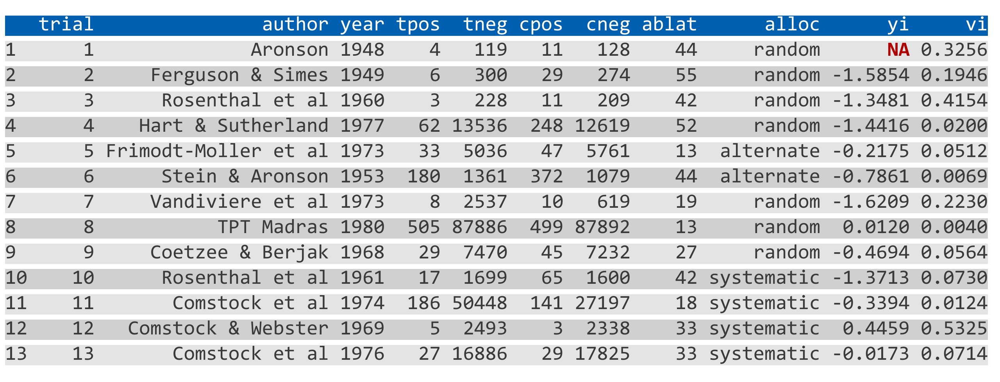
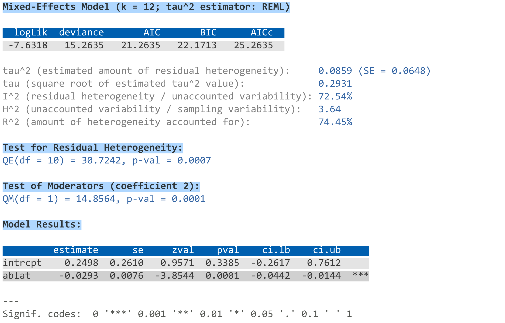
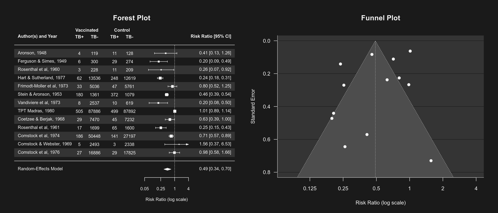
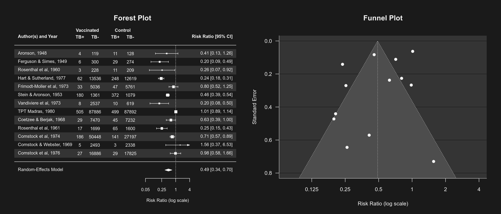

Miscellaneous Options and Features
misc-options.RdThis page documents some miscellaneous options and features that do not fit very well elsewhere.
Details
Specifying the Confidence Level
Several functions in the metafor package have a level argument for specifying the confidence level when calculating confidence (and prediction) intervals. The default is to use a 95% level throughout the package by convention. Note that values \(>=1\) are treated as coverage percentages, values between 0.5 and 1 as coverage proportions, and values below 0.5 as (two-sided) alpha values, so level=95 is the same as level=.95 and level=.05 (but level=0 is always treated as a 0% confidence level).
Controlling the Number of Digits in the Output
Many functions in the metafor package have a digits argument, which can be used to control the number of digits that are displayed in the output when printing numeric values. For more control over the displayed output, one can set this argument to a named vector of the form:
digits=c(est=2, se=3, test=2, pval=3, ci=2, var=3, sevar=3, fit=3, het=3)where the elements control the displayed number of digits for various aspects of the output, namely:
estfor estimates (e.g., effect sizes, model coefficients, predicted values),sefor standard errors,testfor test statistics,pvalfor p-values,cifor confidence/prediction interval bounds,varfor sampling variances and variance components,sevarfor standard errors thereof,fitfor fit statistics,hetfor heterogeneity statistics.
Instead of setting this argument in each function call, one can use setmfopt(digits = ...) to set the desired number of digits for the various elements (see mfopt for getting and setting package options). For example, setmfopt(digits = c(est=2, se=3, test=2, pval=3, ci=2, var=3, sevar=3, fit=3, het=3)) could be a sensible choice when analyzing various types of standardized effect size measures.
Styled Output with the crayon Package
The crayon package provides a way to create colored output. The metafor package is designed to automatically make use of this feature when the crayon package is installed (install.packages("crayon")) and loaded (library(crayon)). Note that this only works on terminals that support ‘ANSI’ color/highlight codes (e.g., not under RGui on Windows or R.app on macOS, but the RStudio console and all modern terminals should support this).
The default color style that is used is quite plain, but should work with a light or dark colored background. One can modify the color style with setmfopt(style = ...), where ... is a list whose elements specify the styles for various parts of the output (see below for some examples and the documentation of the crayon package for the syntax to specify styles). The following elements are recognized:
headerfor the header of tables (underlined by default),body1for odd numbered rows in the body of tables,body2for even numbered rows in the body of tables,nafor missing values in tables,sectionfor section headers (bold by default),textfor descriptive text in the output,resultfor the corresponding result(s),stopfor errors (bold red by default),warningfor warnings (yellow by default),messagefor messages (green by default),verbosefor the text in verbose output (cyan by default),legendfor legends (gray by default).
Elements not specified are styled according to their defaults. For example, one could use:
setmfopt(style = list(header = combine_styles("gray20", "underline"),
body1 = make_style("gray40"),
body2 = make_style("gray40"),
na = bold,
section = combine_styles("gray15", "bold"),
text = make_style("gray50"),
result = make_style("gray30"),
legend = make_style("gray70")))or
setmfopt(style = list(header = combine_styles("gray80", "underline"),
body1 = make_style("gray60"),
body2 = make_style("gray60"),
na = bold,
section = combine_styles("gray85", "bold"),
text = make_style("gray50"),
result = make_style("gray70"),
legend = make_style("gray30")))for a light or dark colored background, respectively. A slightly more colorful style could be:
setmfopt(style = list(header = combine_styles("snow", make_style("royalblue4", bg=TRUE)),
body1 = combine_styles("gray10", make_style("gray95", bg=TRUE)),
body2 = combine_styles("gray10", make_style("gray85", bg=TRUE)),
na = combine_styles("orange4", "bold"),
section = combine_styles("black", "bold", make_style("gray90", bg=TRUE)),
text = make_style("gray40"),
result = make_style("blue"),
legend = make_style("gray70")))or
setmfopt(style = list(header = combine_styles("snow", make_style("royalblue4", bg=TRUE)),
body1 = combine_styles("gray90", make_style("gray10", bg=TRUE)),
body2 = combine_styles("gray90", make_style("gray15", bg=TRUE)),
na = combine_styles("orange1", "bold"),
section = combine_styles("snow", "bold", make_style("gray10", bg=TRUE)),
text = make_style("gray60"),
result = make_style("steelblue1"),
legend = make_style("gray30")))for a light and dark colored background, respectively.
The following code snippet includes all output elements (except for an error) and can be used to test out a chosen color style:
# calculate log risk ratios and corresponding sampling variances
dat <- escalc(measure="RR", ai=tpos, bi=tneg,
ci=cpos, di=cneg, data=dat.bcg)
dat$yi[1] <- NA # set one estimate to missing so we get a warning below
dat
# fit random-effects model
res <- rma(yi, vi, mods = ~ ablat, data=dat, verbose=3)
summary(res)For example, using the color scheme above (for a light colored background), the output should look like this: 
Note that support for 256 different colors and text formatting (such as underlined and bold text) differs across terminals.
To switch off output styling when the crayon package is loaded, use setmfopt(style=FALSE).
Removing Empty Lines Before and After the Output
When printing output, an empty line is usually added before and after the output. For more compact output, this can be suppressed with setmfopt(space=FALSE) (see mfopt for getting and setting package options). For example, running the following code:
# calculate log risk ratios and corresponding sampling variances
dat <- escalc(measure="RR", ai=tpos, bi=tneg,
ci=cpos, di=cneg, data=dat.bcg)
# fit a random-effects model
res <- rma(yi, vi, data=dat)
res
setmfopt(space=FALSE)
resshows the difference.
Dark Mode for Plots
By default, plots created in R have a white background and use black (and other darker colors) as the plotting color. Figures created with the metafor package also adhere to this standard. However, all plotting functions in the package are designed in such a way that switching to a dark background is easily possible. For this, one should set the canvas/figure background to a dark color (e.g., "black" or "gray10") and the foreground color to some bright color (e.g., "gray90", "gray95", or "white"). This can be easily accomplished with setmfopt(theme="custom", fg="gray95", bg="gray10") (see mfopt for getting and setting package options).
Figures that make use of additional colors for various plot elements will by default then use colors that are compatible with the chosen background. For example, the following two figures illustrate the difference between the two styles:
 

By setting setmfopt(theme="dark"), all plots created by the package will automatically use a dark mode. RStudio users can also set setmfopt(theme="auto"), in which case plotting colors are chosen depending on the RStudio theme used (for some themes, setting this to "auto2" might be aesthetically more pleasing).
Version Check
When loading the metafor package in an interactive session, an automatic check is carried out to compare the version number of the installed package with the one available on CRAN. If the installed version is older than the one available on CRAN, the user is notified that a new version is available. This check can be suppressed by setting the environment variable METAFOR_VERSION_CHECK to FALSE (e.g., with Sys.setenv(METAFOR_VERSION_CHECK=FALSE)) or with options(metafor=list(check=FALSE)) before loading the package (see mfopt for getting and setting package options).
By setting the environment variable to "devel" (e.g., with Sys.setenv(METAFOR_VERSION_CHECK="devel")) or with options(metafor=list(check="devel")), the version check is run against the ‘development version’ of the package available on GitHub.
Model Fitting / Processing Time
The various model fitting functions (i.e., rma.uni, rma.mh, rma.peto, rma.glmm, rma.mv, and selmodel) and various other functions (e.g., confint, cumul, leave1out, profile, rstudent) automatically keep track of the model fitting / processing time. This information is stored as element time (in seconds) in the object that is returned. One can also use argument time=TRUE to nicely print this information. For example:
# fit multilevel mixed-effects meta-regression model and print the processing time
res <- rma.mv(yi, vi, mods = ~ condition,
random = list(~ 1 | article/experiment/sample/id, ~ 1 | pairing),
data=dat.mccurdy2020, sparse=TRUE, digits=3, time=TRUE)
# extract the processing time (should take somewhere around 10-20 seconds on a modern CPU)
res$timeModel Object Sizes
The objects returned by model fitting functions like rma.uni, rma.mh, rma.peto, rma.glmm, and rma.mv contain information that is needed by some of the method functions that can be applied to such objects, but that can lead to objects that are relatively large in size. As an example, the model objects that are created as part of the example code for dat.moura2021 are approximately 120MB in size. To reduce the object size, one can make use of the (undocumented) argument outlist. When setting outlist="minimal", the resulting object contains only the minimal information needed to print the object (which results in an object that is around 13KB in size). Alternatively, one can set outlist to a string that specifies what objects that are created within the model fitting function should be returned (and under which name). For example, outlist="coef=beta, vcov=vb" would indicate that only the model coefficient(s) (with name coef) and the corresponding variance-covariance matrix (with name vcov) should be returned (the resulting object then is only around 2KB in size). Note that this requires knowledge of how objects within the model fitting function are named, so inspection of the source code of a function will then be necessary. Also, there is no guarantee that method functions will still work when including only a subset of the information that is typically stored in model objects.
Load Balancing
Several functions in the metafor package can make use of parallel processing (e.g., profile) to speed up intensive computations on machines with multiple cores. When using parallel="snow", the default is to use the parLapply function from the parallel package for this purpose. In some cases (especially when the parallelized computations take up quite variable amounts of time to complete), using ‘load balancing’ may help to speed things up further (by using the parLapplyLB function). This can be enabled with pbapply::pboptions(use_lb=TRUE) before running the function that makes use of parallel processing. Whether this really does speed things up depends on many factors and is hard to predict.
References
Viechtbauer, W. (2010). Conducting meta-analyses in R with the metafor package. Journal of Statistical Software, 36(3), 1–48. https://doi.org/10.18637/jss.v036.i03